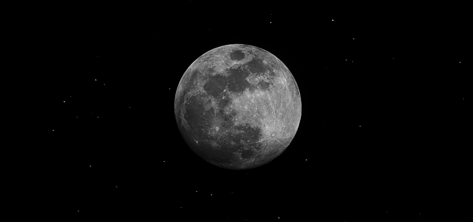

Desde a antiguidade, a Lua desperta a curiosidade dos homens. Para os guaranis, uma das mais representativas etnias indígenas das Américas, a Lua era uma deusa chamada Jaci, protetora das plantas, dos amantes e da reprodução. Mitologicamente, Jaci é identificada com Diana dos romanos, Xochiquetzal dos astecas, Chandra dos hindus e Ísis dos antigos egípcios.

O começo sua Origem?
"Não se sabe ao certo como a lua se originou, mas existem inúmeras teorias que relatam seu aparecimento em órbita. A teoria mais aceita hoje diz que a lua se formou através de uma colisão entre o planeta Terra e um corpo do tamanho de Marte, há aproximadamente 4,6 bilhões de anos."
Veja mais sobre "A Origem da Lua" em: saiba mais no site a-origem-da-lua